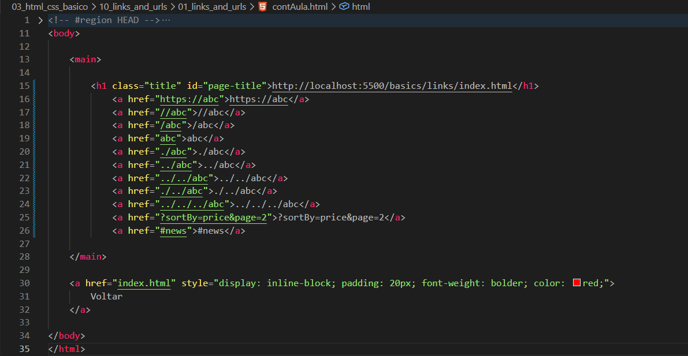

Links and URLs
Introdução
Aqui veremos como funcionam os links e como utilizá-los corretamente.
Aqui veremos como funcionam os links e como utilizá-los corretamente.
HTML:

Neste exemplo, temos um conjunto de links para entender como funciona um endereço completo (URL) e também os endereços relativos.
Aqui temos o protocolo HTTPS, que é uma versão segura do HTTP, utilizada para proteger a comunicação entre cliente e servidor.
É um endereço absoluto sem protocolo definido. Nesse caso, o navegador utiliza o mesmo protocolo da página atual (HTTP ou HTTPS).
Indica um endereço relativo à raiz do projeto, ou seja, começa a busca a partir do diretório principal.
Ambos são endereços relativos ao diretório atual. Eles indicam que o arquivo ou pasta está no mesmo nível do arquivo atual.
Indica que estamos subindo um nível no diretório. O .. sempre representa o diretório anterior.
Aqui estamos subindo dois níveis na estrutura de diretórios.
Apesar da combinação, o resultado final é o mesmo que ../abc, ou seja, subir um nível e acessar abc.
Caso tentemos subir mais níveis do que existem, o navegador simplesmente para na raiz e continua a navegação a partir dela.
São parâmetros de consulta (query parameters). Neste caso:
É um fragmento (âncora), utilizado para navegar diretamente para uma seção específica da página.
Conteúdo da aula